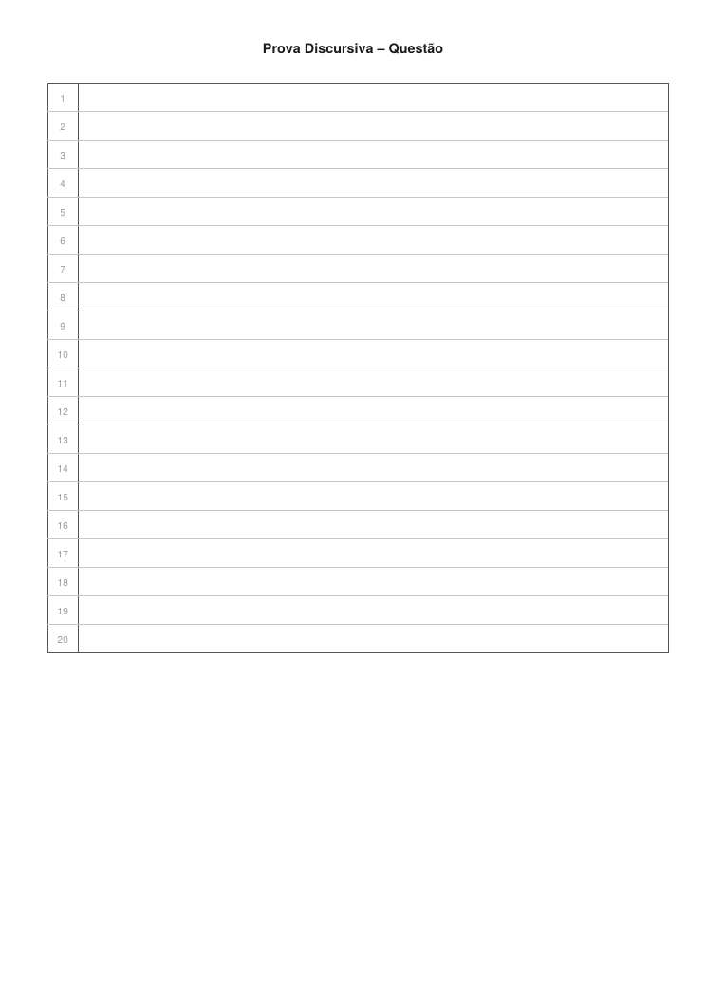
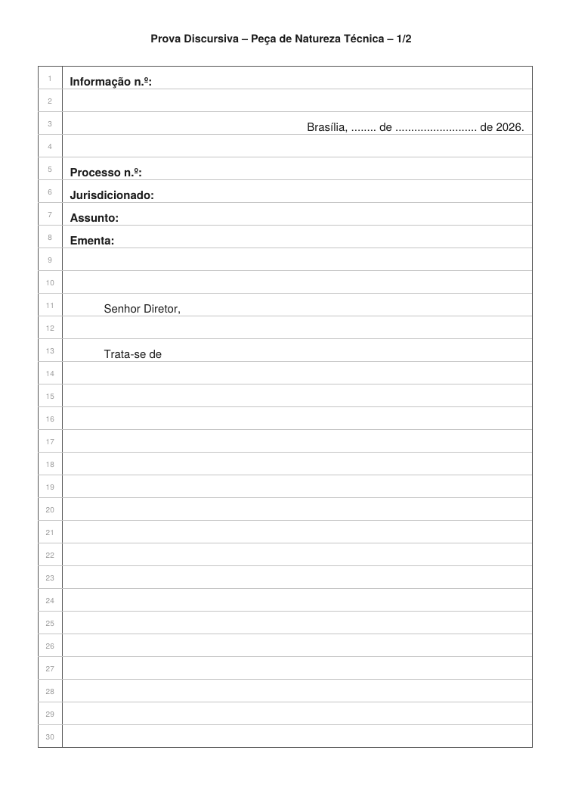
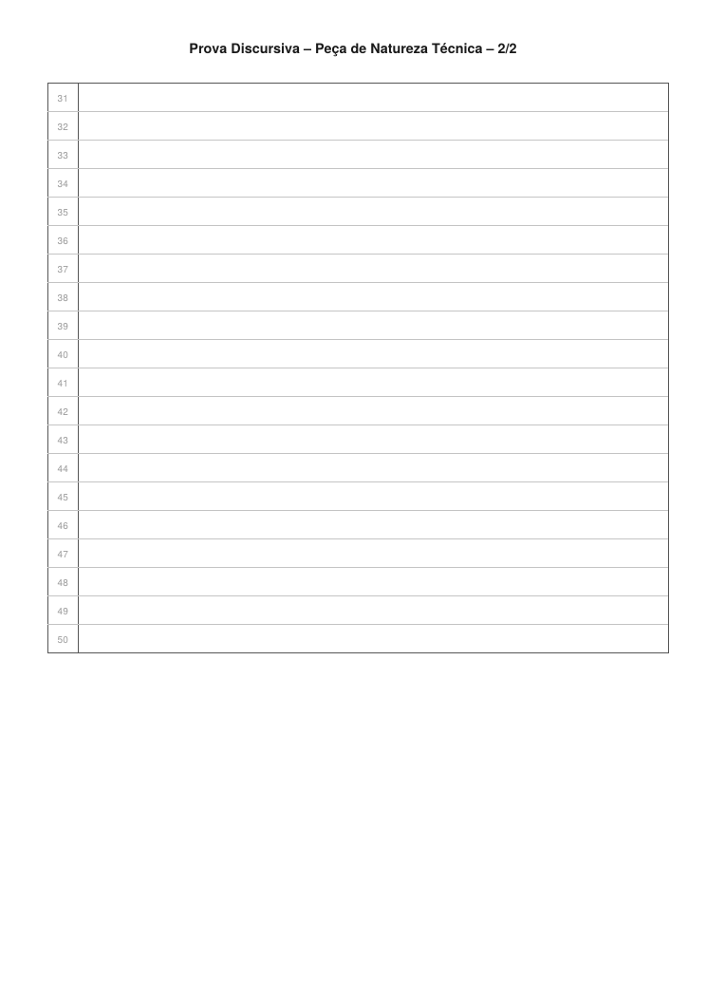

Questão discursiva · 1 folha · 20 linhas
Folha da questão
Grade em branco no modelo Cebraspe, 20 linhas numeradas. Para treinar com os conectivos de um tema, use o botão "Folha de treino deste tema" na aba 1.

Entre com sua conta Google para carregar e salvar suas correções na nuvem. Nada fica guardado só neste aparelho.
Anexe a foto ou o PDF da folha de texto definitivo (peça: as 2 folhas, na ordem)
Fotografe ou escaneie de cima, com boa luz, a folha inteira e sem cortes. A correção lê a letra, avalia a legibilidade palavra por palavra e corrige o conteúdo.
Cole aqui o texto copiado da foto (Google Lens) ou digite. Confira com a folha e conserte só o que o leitor leu errado. Não corrija os seus próprios erros de português: eles contam como NE. Mantenha uma linha da folha por linha aqui.
A imagem da sua prova manuscrita (PDF, JPG, PNG ou .docx com as fotos), uma folha por página.
O espelho com os conceitos por quesito, os erros marcados por linha, NC, NE e TL. Anexe ou cole o texto.
Uma linha da folha por linha, no formato "número + texto". Corrija o que estiver errado e troque os [?] pela palavra certa. Não corrija os seus erros de português: eles precisam ficar como estão na folha.
Grade em branco no modelo Cebraspe, 20 linhas numeradas. Para treinar com os conectivos de um tema, use o botão "Folha de treino deste tema" na aba 1.

Linhas 1–30 e 31–50, com o cabeçalho da Informação (n.º, local e data, processo, jurisdicionado, assunto, ementa), o vocativo e "Trata-se de" na linha 13; o restante fica em branco. Para a estrutura completa de um tema, use "Folha de treino deste tema" na aba 2.


Questão e peça no mesmo PDF (3 páginas A4), para imprimir de uma vez.